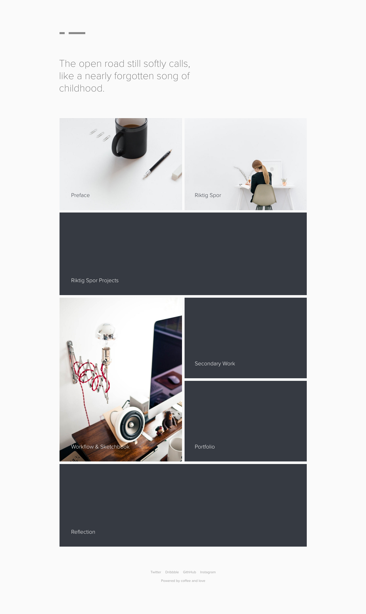
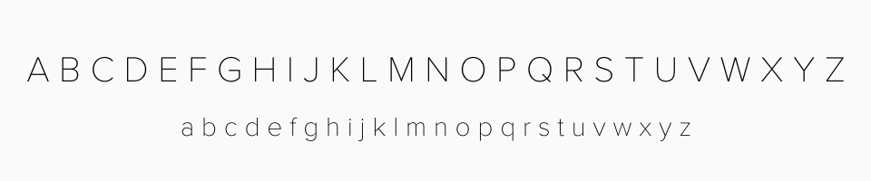
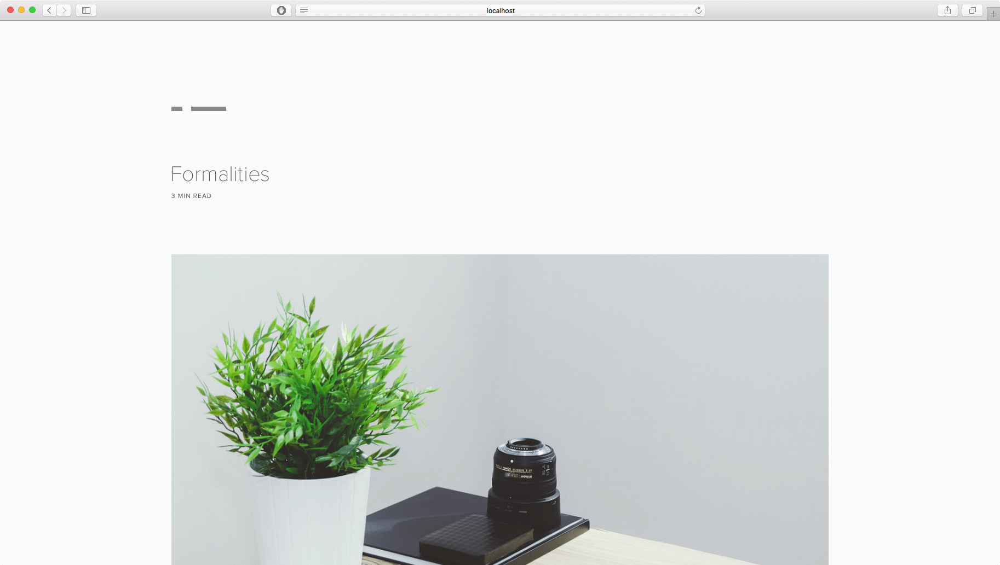
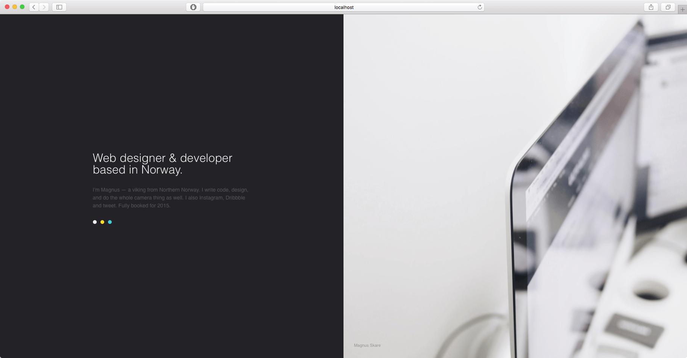
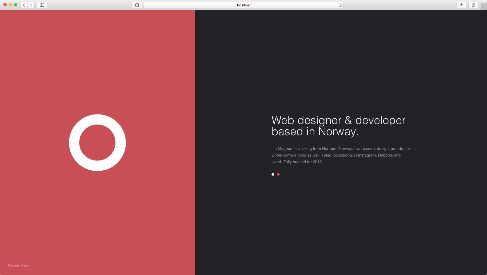

Last semester I thought I had a love–hate relationship with designing things for myself. This semester, I can confirm it, but I can also confirm the importance of "good enough" and releasing a minimum viable product (MVP).In product development, the MVP is the product with the highest return on investment versus risk.
I should mention the feedback from my previous two years in order to justify where we stand today. My first university portfolio was too brief, with lacking depth and a solid foundation.
My second university portfolio took this into account, but perhaps too eagerly. I believe the exact feedback was “excellent, but impenetrable”. Justified, and my fear of seeming too shallow with my work disregarded the end user completely — and while it did not affect my final mark much, I hope to keep this in mind this time.
Problem & solution
Once again, a portfolio may come across as disjointed when you present a wider range of styles throughout your work. Therefore, I still aim to present a rather blank canvas to work on as a primary solution to this, giving every project the attention it deserves without conflicting styles surrounding it. You should see the workflow & sketchbook-section if you’re interested in how I work, solve problems and essentially get from A to B.
Echoing my thoughts from last year, I still find typography to be the most important part of the web.
We source our typography from Typekit, using different weights of Proxima Nova to satisfy our needs. It’s a popular typeface, ideal for multiple purposes like headings and paragraphs. Proxima Nova is clean, neautral and fit for a purpose where the images seek attention.
The site offers roughly 60-80 characters per line, presenting a comfortable reading experience on most modern devices. I also found it important to not disable zoom or any other default behaviour, as my research on reading-experience may not apply to everybody.
Speed & performance
I care about performance. In fact, I am writing my dissertation on performance and accessibility. That's why I built this site with Jekyll to avoid database requests completely.Jekyll is a static site generator, and will by nature be faster than PHP-based solutions
Jekyll is a static site generator and will serve static HTML-files for the end user. The site is generated locally, so we can still benefit from PHP-like includes for our footer and header — this means we avoid the pain of writing static HTML over and over again. It also makes updates easier.
Everything else goes without saying, but should be mentioned anyway: asset compression (JS, CSS, HTML), image compression, limit HTTP requests and third party resources. This should leave us within a reasonable performance-budget of 2 second load time on our initial request and >.5 seconds on second load.

Maintainability & technology
Without getting too technical, I can mention that the site is not very client-friendly. Jekyll in itself runs on Ruby, which is installed via Node and NPM. That's already a bit too much for most clients.View the code behind this site on GitHub
However, this is not a client website, and the lack of a content management system gives me more control as a developer. All my content is written in Markdown, which is a simple language and saves you hours of work in the long run, compared to writing HTML.
I have made my life easier by listing projects in a data-folder, where a loop can access it and generate our homepage. I still code in Sass to benefit from variables and functions in CSS, but I moved on to Gulp to speed up my workflow. However, GitHub Pages will only support a naked Jekyll build, and thus this site may have been generated with the default generator.
The source-code is available on GitHub, which will show the raw files I work with. You can also see how the code works in the main scss-file, which extends to all the included scss-files and main JavaScript file. If you are a developer, I strongly encourage you to clone to repo or read through it on GitHub. This gives me the option to refer to specific code samples and annotate them accordingly to satisfy the assessment sheet.
Alternative approach
This site was certainly not the plan all along, and I did have several different approaches in mind. I have been experimenting with cover-pages, one-page layouts and similar design propositions to this one. However, subjectively and based on colleague feedback, this seemed to be the best approach to highlight all my work in a structured and efficient manner. The blank canvas should give each project the attention it deserves, while simutanously giving me the freedom to be as brief or as thorough as I have to.The workflow & sketchbook-section highlights how I work
I have included some different approaches as screenshots, but live examples are available upon request. You can see more examples under secondary work. These are all fully responsive and should function well in all modern browsers.
 Reflection & conclusion
I hopefully improved upon the previous university portfolio by keeping user experience in mind from the very beginning. By developing a dedicated site for my university projects, I could tailor the site to a very specific group of people — and as I’m aware of their feedback from previous projects along with the assessment sheet, it was easy to know what to include and what to leave out.
I hope this site is able to reflect the amount of work and effort I have put into this semester.